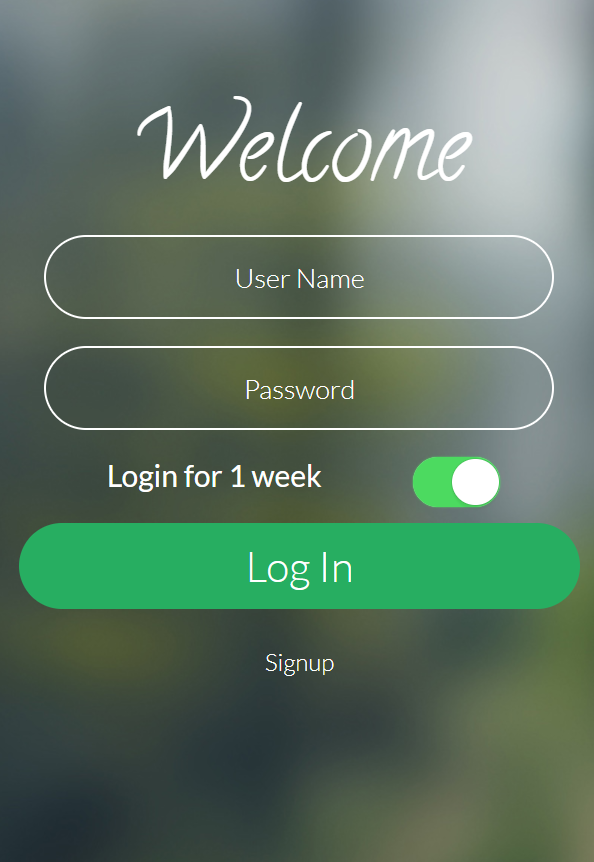
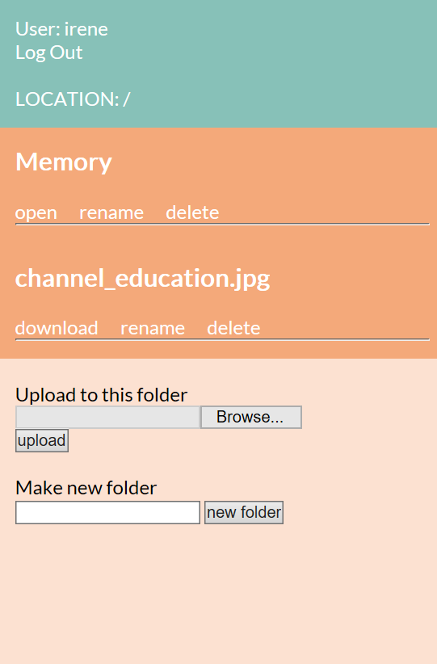

Cloud Drive
A personal project for PHP practicing purpose. With simplest raw PHP code, I try to use my knowledges as much as I can.
Here is a list of things I practiced in this project:
- Session and Cookie
- GET and POST methods
- String and regular expression
- PHP graphic processing methods
- Mixture of PHP and HTML
- Magic methods and constants
Other things want to use in the further development:
- Use mySQL to save account information
- Reconstruct with PHP Frameworks
- Better UI/UX design
- Consider security
The project was testing and running in a localhost environment that provided by WampServer.



